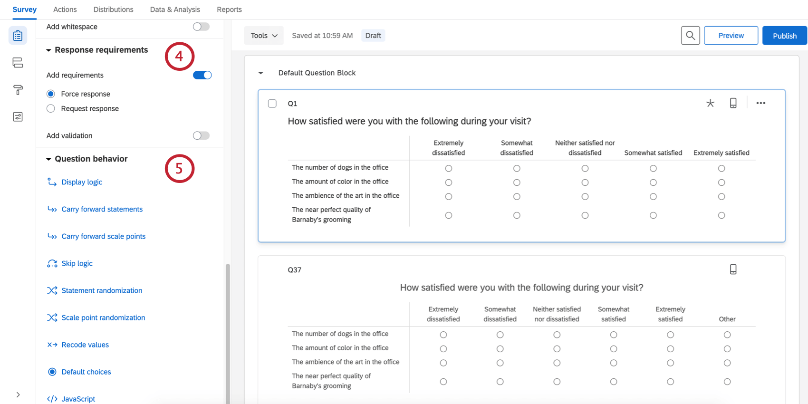
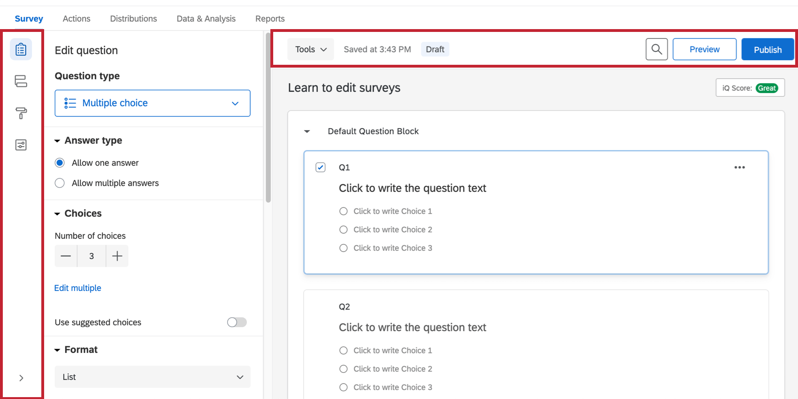
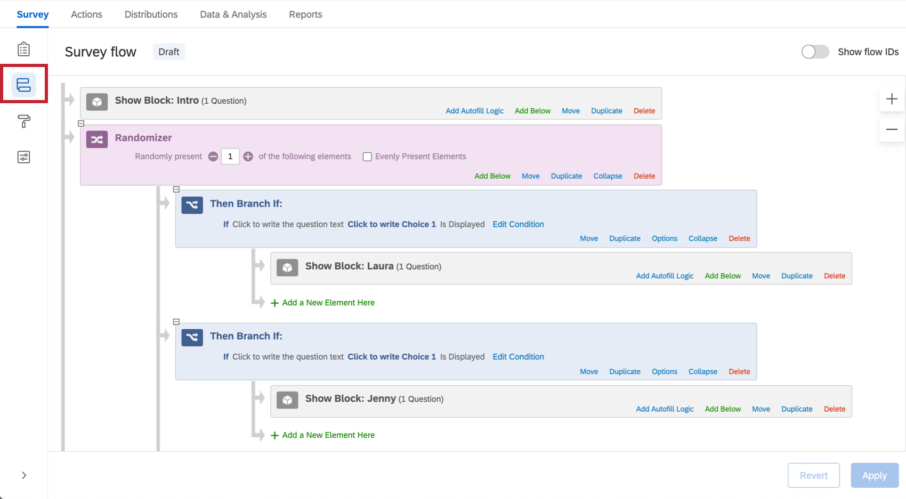

Tipos de preguntas
Cuando haga clic en Crear proyecto, por primera vez, se insertará una pregunta de opción múltiple en su primer bloque de preguntas de forma predeterminada. Sin embargo, puede que quiera cambiarla por otro tipo o estilo de pregunta. Utilice el panel de edición de preguntas para elegir entre más de doce tipos de preguntas (p. ej., opción múltiple, orden de preferencia, mapa de calor, NPS, slider gráfico, etc.).

Consejo Q: Al hacer clic en una pregunta se abrirá su panel de edición de preguntas exclusivo.
Para cambiar los tipos de preguntas:
1. Seleccione Crear proyecto; después de seguir los pasos, accederá a la pestaña Encuesta de su nuevo proyecto.
2. Haga clic en cualquier proyecto existente para ir a la pestaña Encuesta de ese proyecto.
3. Seleccione Editar encuesta en el menú desplegable de acciones.
Cuando se abra la pestaña Encuesta, verá las funciones más destacadas del generador de encuestas:
1. Barra de herramientas de la encuesta
2. Bloque de preguntas
3. Área de edición de preguntas
4. Panel de edición de preguntas
Conceptos básicos de bloque
Todas las preguntas de la encuesta se crean, editan y almacenan dentro de bloques. Cada encuesta incluye al menos un bloque llamado inicialmente “Bloque de preguntas predeterminado”. En cada bloque, aparecen cuatro elementos:
1. Nombre del bloque: puede cambiarlo en cualquier momento si hace clic en el cuadro del nombre y escribe uno nuevo.
2. Añadir bloque: le permite crear bloques nuevos.
3. Panel de edición de bloques: aparece al hacer clic en el bloque (por ejemplo, en un espacio en blanco junto al nombre) sin hacer clic en una pregunta. Realice cambios en el comportamiento y el formato de los bloques. Incluye la aleatorización de preguntas, el loop y fusión, y la capacidad de editar el texto del botón Siguiente/Anterior.
4. Menú Opciones de bloque: muestra una lista de opciones de edición de bloques con un solo clic. Consulte la página del enlace para obtener más información sobre cada opción.
Estos ejemplos ayudarán a comprender mejor el concepto de bloque:
- Varias encuestas empiezan con un bloque inicial de “Datos demográficos” en el que se ordenan los datos de diversos encuestados (p. ej.: mujer u hombre, joven o adulto, formación, etc.) para identificar los bloques de preguntas de encuesta que se adaptan mejor a los receptores.
- En la siguiente imagen se muestra una aplicación de varios bloques, donde el bloque de datos demográficos inicial recopila los nombres y apellidos. En los siguientes bloques, los nombres se pueden reutilizar para dirigirse a los encuestados por sus nombres mediante el uso de la lógica de datos embebidos. Los nombres introducidos también se pueden utilizar para generar o actualizar listas de contactos.
- Además, puede canalizar los diferentes datos demográficos mediante varias rutas de encuestas (es decir, una ruta para hombres y otra para mujeres) gracias a la Lógica de ramificación.
- Puede elegir varios encuestados en virtud de las las cuotas alcanzadas para una demografía concreta (es decir, cuotas según edad, género o nivel de ingresos).
- Por último, podría mostrar diferentes finalizaciones de encuesta para cada grupo demográfico.
Veamos un poco más en detalle:
- Un segundo bloque (Indicadores clave) aparece debajo del bloque de preguntas predeterminado renombrado como Bloque de datos demográficos.
- El menú Opciones de bloque presenta comandos para los bloques, como contraer preguntas (lo que reduce las preguntas de un bloque para una mejor visualización, como vimos con el bloque Demografía).
- Los bloques se separan mediante un separador (que incluye un práctico comando Añadir bloque).
Para encuestas sencillas, se puede utilizar un único bloque para todas las preguntas. Sin embargo, para encuestas más complejas, se requiere una organización de las preguntas en varios bloques que permitan la aplicación de las lógicas de flujo de la encuesta, que incluye ramificación, aleatorización, autenticación y Datos embebidos.
Visita el Bloques de preguntas Página para aprender cómo aprovechar al máximo los bloques en la creación de flujos de encuesta sofisticados.lama
Conceptos básicos del panel de preguntas y edición
Inicialmente, se insertará una pregunta de opción múltiple predeterminada en su Bloque de preguntas predeterminado. De este modo, se garantiza que el bloque contenga al menos una pregunta para empezar.
1. Para añadir más preguntas a un bloque, haga clic en Añadir nueva pregunta.
2. Si desea añadir más preguntas, desplácese sobre cualquiera de las preguntas existentes y haga clic en los botones con el símbolo más (+) (situados en la parte superior o inferior de la pregunta existente) en función de dónde desee agregar la pregunta.
3. Haga clic en el signo menos (–) para eliminar una pregunta.
Consejo Q: Puede recuperar las preguntas eliminadas de la papelera situada en la parte inferior de la encuesta. Consulte la sección Eliminar preguntas para obtener más información.
4. Para mover las preguntas, haga clic en ellas y arrástrelas. La pregunta que se mueva se resaltará en azul y donde aterriza está representada por una línea azul en el editor.

Consejo Q: Tenga cuidado de no hacer clic en el texto de la pregunta o en el texto de la opción de respuesta, o terminará editando el texto de la pregunta en lugar de moverla.
Edición del texto de la pregunta
Puede escribir preguntas, editar el texto de las preguntas y aplicar formato al texto de estas en la zona de edición.
1. Haga clic en los cuadros de texto de la pregunta (u opciones de respuesta) para insertar o editar texto.
2. Haga clic en el botón Texto dinámico para obtener información de preguntas y bloques anteriores (p. ej.: reutilizar el nombre de una persona de un bloque de datos demográficos para personalizar una pregunta).
3. Haga clic en el botón Editor de contenido enriquecido para dar formato al texto cambiando las fuentes y los tamaños de fuente, aplicando negritas, viñetas, cursiva y más.